This document describes the behavior of main.py based on
command-line arguments.

--export specified)--article is specified:
export_prices_to_csv(..., article_no=args.article, overhead_percent=args.overhead, quantity=args.quantity)--prices is specified:
--article)export_prices_to_csv(..., article_no=args.prices, overhead_percent=args.overhead, quantity=args.quantity)--limit is specified or not):
export_prices_to_csv(..., limit=args.limit, overhead_percent=args.overhead, quantity=args.quantity)--limit is not specified, default
limit=1 (first article only)--limit all or --limit None for
unlimited export--article specified, no
--export)--overhead and --qnt are not used
(no price calculations)SystemExit with error
message--prices specified, no --export)--overhead and --qnt options for
price calculationsSystemExit with error
message--limit not specified or --limit == 1,
no other flags)--overhead and --qnt options for
price calculations[]article: raw article dataprices: first element from calculated prices (or
None)--limit specified and != 1, no other
flags)--overhead and --qnt options for
price calculationsargs.limit (or unlimited if
--limit all or --limit None)--overhead <float>: Overhead percentage (default:
0.0)
--qnt <float>: Quantity for price calculation
(default: 1.0 if not specified)
--limit <int|all|None>: Limit number of articles
(default: 1)
--limit is not specified or equals
1# Export first article
python main.py --export output.csv
# Export all articles
python main.py --export output.csv --limit all
# Export specific article
python main.py --export output.csv --article 2TOP
# Lookup raw article data
python main.py --article 2TOP
# Calculate prices for specific article
python main.py --prices 2TOP --qnt 100
# Default: first article with prices
python main.py
# List first 10 articles with prices
python main.py --limit 10
# List all articles with prices
python main.py --limit allBehavior differs by mode:
Article Lookup Mode
(--article):
python main.py --article NONEXISTENT
# Output: SystemExit with error message
# Error: "Article NONEXISTENT not found"Prices Lookup Mode (--prices):
python main.py --prices NONEXISTENT
# Output: SystemExit with error message
# Error: "Article NONEXISTENT not found"Export Mode (--export):
python main.py --export output.csv --article NONEXISTENT
# Output: CSV file is created with headers only (no data rows)
# Message: "Exported results to output.csv"
# No error is raised - export succeeds with empty resultWhen no articles exist in the database:
Default Mode:
python main.py
# Output: []
# (Empty JSON array)List Mode:
python main.py --limit 10
# Output: []
# (Empty JSON array)Export Mode:
python main.py --export output.csv
# Output: CSV file created with headers only
# Message: "Exported results to output.csv"Article/Prices Lookup:
python main.py --article ANY
# Output: SystemExit with error
# Error: "Article ANY not found"Valid combinations:
--export --article --overhead --qnt: Export specific
article with overhead and quantity--prices --overhead --qnt: Calculate prices with
overhead and quantity--limit --overhead --qnt: List multiple articles with
overhead and quantityOptions that don’t apply:
--article mode: --overhead and
--qnt are ignored (no price calculations)--export --article and --export --prices:
Both work the same way (export specific article)Example of combining options:
# Export specific article with overhead 10% and quantity 100
python main.py --export output.csv --article 2TOP --overhead 10.0 --qnt 100
# Calculate prices for article with overhead 5% and quantity 50
python main.py --prices 2TOP --overhead 5.0 --qnt 50
# List first 5 articles with overhead 15% and quantity 200
python main.py --limit 5 --overhead 15.0 --qnt 200Special limit values:
--limit 1 or no --limit: Default mode
(first article with both article info and prices)--limit 0: Returns empty array []--limit all or --limit None: Unlimited
(all articles)--limit 10: List mode (first 10 articles with
calculated prices only)Example:
python main.py --limit 0
# Output: []
python main.py --limit all
# Output: [array of all articles with calculated prices]Export always succeeds, even with no data:
Example:
# Export non-existent article
python main.py --export output.csv --article NONEXISTENT
# Creates: output.csv with headers, no data rows
# No error raised
# Export with limit 0
python main.py --export output.csv --limit 0
# Creates: output.csv with headers, no data rows